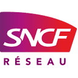
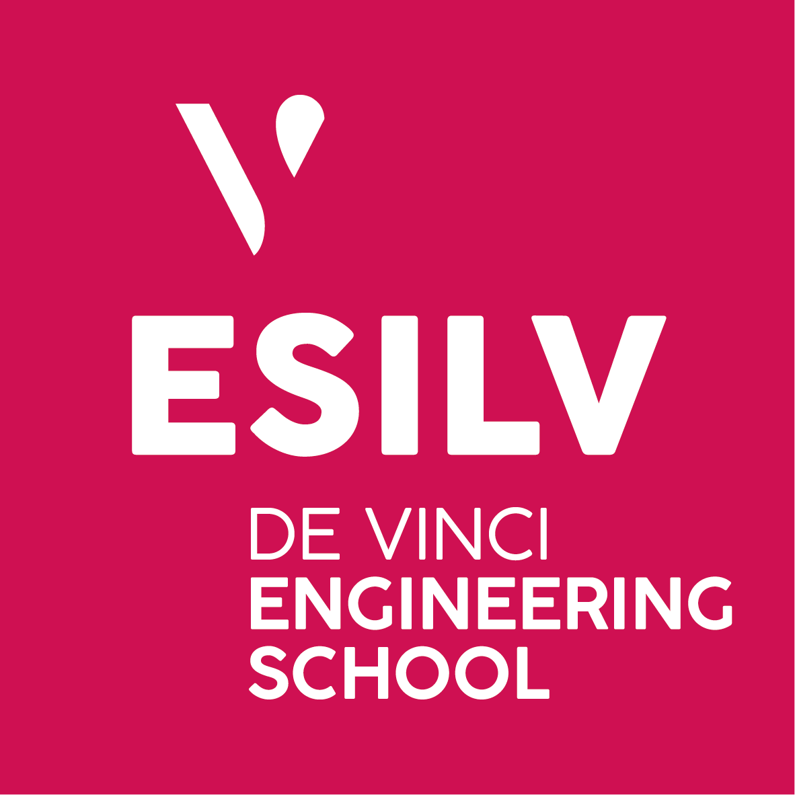

Profile
Product-minded engineer with a background in business data analysis and applied AI. Since September 2025,
combining independent website and AI consulting projects with one-to-one tutoring in mathematics and English. Since
May 2026, shaping and operating Magical Chart, a live AI-powered product available in 22 languages — including its own
multi-step AI agent, a published MCP server, a native Android app and a production astronomy API listed on RapidAPI. Experienced in product direction, user journeys,
prioritization, analytics and iteration. Seeking Product Owner, Digital Product Manager or AI Product roles.
Experience
 Founder & Product Lead — Magical Chart
Founder & Product Lead — Magical Chart
May 2026–Present | Independent digital product | Remote | magicalchart.com
- Conceived and launched an AI-powered product with interactive tarot, astrology and numerology experiences available in 22 languages; own its product direction, roadmap, user journeys and iteration.
- Shape pricing and the free-to-paid journey; use product analytics and customer feedback to prioritize improvements.
- Published Magical Chart on Google Play; implemented in-app billing and push notification reminders for a native Android experience alongside the web product.
- Built an interactive, location-aware 3D Star Map with a 3D landscape mode rendering the real horizon and terrain, connecting the product's astronomy engine to a 3D sky with named stars and touch-friendly controls.
- Extracted and open-sourced the product's astronomy calculation engine as astronomy-core, a TypeScript npm package (published, 141 tests) with provider-pattern design, covering 15+ celestial bodies, Placidus houses, astrocartography and asteroid positions — validated against Swiss Ephemeris.
- Built a structured tarot learning course with 209 lessons and Duolingo-style progress tracking — lesson-by-lesson progression with persistent state, available as a standalone $49 product.
- Scoped and shipped a multi-step AI agent (Anthropic tool-calling), deliberately contained: isolated page, daily usage quota, hard monthly spend cap read from usage logs before every call — validating demand before committing budget, not just a technical build.
- Built and published an open-source MCP (Model Context Protocol) server exposing the product's astronomical engine as callable tools for any AI agent, verified with a real client handshake before release.
- Integrated Langfuse for LLM observability across all production AI calls, capturing model, token usage, latency and prompt version per trace on a live product serving 3,800+ users.
- Build and deploy with Claude Code, Codex and Cursor, leading product decisions and AI-assisted workflows.
- Audited AI inference spend with a custom usage-tracking script, found one model choice responsible for 81% of cost on lower token volume, and migrated every production AI call to a more cost-efficient model without degrading output quality.
- Operate a product with 1,100+ informational pages and interactive tools across 22 languages.
- Latest 30-day analytics: 3,828 users and 5,011 sessions in GA4 (12 Sep–11 Oct 2026); Search Console recorded 1,604 clicks (12 Sep–10 Oct 2026).
- Designed, built and published a paid astronomy API — natal charts, astrocartography, moon phases and AI interpretation — with tiered Stripe billing, automated key generation and delivery via webhook, usage quota enforcement, and a self-serve dashboard; listed on RapidAPI marketplace.
Freelance Web & AI Consultant — Independent
September 2025–Present | Remote | florynepierson.com
- Create websites for clients and advise on practical ways to use AI in their work.
- Built a Make.com automation for a small-business client to handle incoming email, removing a manual step from their operations — hands-on workflow automation, not just API theory.
- Deliver content strategy, SEO and analytics work end to end, from technical audit to implementation and measurement (Google Search Console, GA4, Microsoft Clarity).
- Client project: local SEO and booking-journey optimisation for Claire et Coloré, a beauty salon in Reims — diagnosed drop-off points in the booking path and shipped the fix.
- Built and open-sourced a retrieval-augmented generation (RAG) demo for document Q&A — available on GitHub.
- Prospect for projects, clarify needs and scope solutions with prospective clients.
 Independent Developer — Midnight ZKP Explorer
Independent Developer — Midnight ZKP Explorer
2026 | Personal project | my-dapp-liard.vercel.app
- Built an interactive dApp with 14 visualization tabs covering ZK proof flows, Merkle trees, nullifier mechanics, selective disclosure, DEX/AMM logic and the full transaction lifecycle — with real wallet connectivity (wagmi) and a revision quiz.
- Earned Blockchain Fundamentals and Phase 2 certifications from Midnight Academy alongside the build.
Private Tutor — Mathematics & English
September 2025–Present | Middle school and high school level | France
- Provide one-to-one tutoring in mathematics and English for secondary-school students.
- Adapt explanations and practice to each student's level and learning goals.
Business Data Analyst — LOBELLIA Conseil / ASTILLIA
September 2024–July 2025 | Permanent | Client assignment: URSSAF | Montrouge, France
- Analyzed and processed business data to support operational decision-making and reporting.
- Worked with business and technical stakeholders to clarify requirements and support delivery.
- Produced reporting and data-driven analyses; contributed to monitoring, process improvements and tool improvements.
- Tools: SQL, PostgreSQL, Power BI, Git, pgAdmin.
Business Data Analyst Intern — LOBELLIA Conseil / ASTILLIA
February 2024–August 2024 | Internship | Montrouge, France
- Developed and maintained Power BI dashboards for business users.
- Automated recurring reporting and operational tasks using VBA.
- Supported requirements analysis, data processing and project deliverables in collaboration with business teams.
- Tools: Power BI, VBA.
AI & Data Science Intern — Viaticum
May 2023–August 2023 | Paris, France
- Independently designed and developed an AI-based approach to personalize travel offers using consumer profiles and preferences.
- Defined consumer personas and matching logic to connect profiles with relevant travel offers.
- Led the project from problem definition and data analysis through solution development, results analysis and stakeholder presentation.
- Tools: Python, Deep Learning, NLP, Power BI.

Engineering Studies Intern — SNCF Réseau
June 2022–July 2022 | Metz, France
- Supported engineering teams with operational reporting, organization and analysis of information.
- Contributed to internal process improvements and basic automation.
Education

ESILV — École Supérieure d'Ingénieurs Léonard de Vinci
De Vinci Higher Education, Paris–La Défense
General Engineering Degree, Data & Artificial Intelligence major | 2021–2024
Coursework: C#, Python, supervised & unsupervised learning, deep learning fundamentals.
Hanyang University (Seoul, South Korea) — Department of Computer Science
Master 2 exchange semester | August–December 2023
Relevant coursework: Computer Vision, Data Science for Social Sciences, Natural Language Processing, Machine Learning, Korean Language (Foundational)
Lycée Fabert, Metz — CPGE MPSI/MP* (Classes Préparatoires), 2018–2021
France's selective national track preparing for competitive entry into top engineering schools.
Baccalauréat — Lycée Georges de la Tour, Metz, 2018
Scientific track, Mathematics specialization, Highest Honors.
Skills
Product: Product discovery, product direction, feature prioritization, user journeys, prototyping, product analytics, experimentation, cross-functional collaboration, product delivery
Data & AI: SQL, PostgreSQL, Python, Deep Learning, NLP, AI product integration, LLM-assisted prototyping, multi-step tool-calling agents (Anthropic), the Model Context Protocol (built a server), retrieval-augmented generation (RAG), Langfuse (LLM observability)
Engineering & Tools: Node.js, TypeScript, APIs & webhooks, Supabase, Vercel, Stripe, Android (Google Play), Claude Code, Codex, Cursor, Make.com, Power BI, GA4, Google Search Console, Git, VBA, pgAdmin